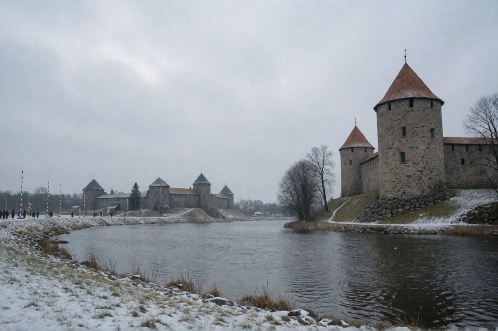

Geopolitica · 7 novembre 2026
L'Estonia all'Europa: non provate a compiacere il dittatore

A pochi giorni dai colloqui di Abu Dhabi fra Stati Uniti, Russia e Ucraina, il primo ministro estone Kristen Michal avverte le capitali europee: chi si mette a fare il mediatore con Putin finisce per abbassare l'asticella.
di Franco Zanghì
Il primo ministro dell'Estonia, Kristen Michal, ha detto all'Europa di non mettersi nel ruolo del mediatore con Vladimir Putin. Lo ha fatto in un'intervista a Politico, ripresa il 6 novembre da diverse testate europee, a pochi giorni da un appuntamento che l'Europa guarda da fuori.
Il tavolo di Abu Dhabi
Il 10 e l'11 novembre, ad Abu Dhabi, negli Emirati Arabi Uniti, si siedono allo stesso tavolo delegazioni di Stati Uniti, Russia e Ucraina. L'incontro è stato annunciato dall'inviato di Donald Trump, Steve Witkoff, e confermato dal Cremlino. Sono colloqui a tre che mancavano da mesi, e l'Europa a quel tavolo non c'è.
L'avvertimento di Michal
Secondo le riprese dell'intervista, Michal sostiene che l'Europa non debba assumere il ruolo di chi cerca di fare piacere al dittatore. Il ragionamento è semplice: non si possono avere due ruoli insieme. Uno è sostenere l'Ucraina e fare pressione sulla Russia; l'altro è fare da mediatore, e fare da mediatore significa essere disposti ad abbassare l'asticella, a cominciare dalle sanzioni.
Michal non fa nomi. Ma il contesto è chiaro: a fine ottobre il presidente finlandese Alexander Stubb e il primo ministro norvegese Jonas Gahr Støre hanno parlato al telefono con Putin per circa un'ora e mezza, e nelle capitali europee cresce il timore che Washington chiuda un accordo con Mosca senza l'Europa e a spese di Kiev.
La linea di Tallinn è un'altra: il problema è il Cremlino e nessun altro, Putin deve vedere un'Europa forte, unita e con una voce sola, e la pressione economica non va allentata ma stretta. Sulle sanzioni Michal aggiunge una frase destinata a circolare a Bruxelles: per una volta l'Europa ha un piano che funziona davvero.
Il fronte dei visti
C'è poi un terreno più concreto. L'Estonia, insieme a Polonia e Svezia, chiede di stringere le regole sui visti per i cittadini russi, fino a vietare l'ingresso nell'Unione agli ex soldati che hanno combattuto in Ucraina. Secondo funzionari europei citati da Politico, i visti turistici avrebbero agevolato agenti russi in operazioni di sabotaggio e nei sorvoli di droni. La Commissione europea dovrebbe presentare una proposta legislativa all'inizio del prossimo anno.
Perché riguarda anche Roma
L'Estonia ha poco più di un milione e trecentomila abitanti e confina con la Russia: per i paesi baltici un accordo sbagliato non è una discussione da convegno, è la frontiera di casa. E la scelta che pongono riguarda anche l'Italia: sostenere l'Ucraina e tenere le sanzioni, oppure provare a ritagliarsi un posto da mediatori.
Michal dice ad alta voce quello che diversi governi pensano e non dicono: chi tratta da solo con Mosca indebolisce la posizione di tutti. Ma c'è un rischio anche dall'altra parte. Se l'Europa rifiuta ogni canale, la pace la scrivono Washington e Mosca, e all'Europa resta il conto da pagare. Due cose da guardare adesso: chi siede davvero ad Abu Dhabi e che cosa finisce sul tavolo, e quanto l'Unione sarà disposta a seguire i baltici sulla proposta dei visti.
Fonti
- Politico, intervista a Kristen Michal, 6 novembre 2026, ripresa da bursa.ro, digi24 e stiripesurse
- Mezha, «Estonia's prime minister urges Europe not to seek direct talks with Putin», 6 novembre 2026
- UA News, «Estonian PM Michal urges Europe not to open a channel with Putin»
- Meduza e Kathmandu Post per la conferma dei colloqui di Abu Dhabi del 10 e 11 novembre (Cremlino, 3 novembre 2026)
Le frasi di Kristen Michal sono rese in italiano dalle riprese dell'intervista pubblicate in rumeno e in inglese: il testo originale di Politico non è stato letto direttamente, quindi le parole riportate non sono citazioni letterali. La data e la composizione del tavolo di Abu Dhabi sono quelle annunciate e possono cambiare.